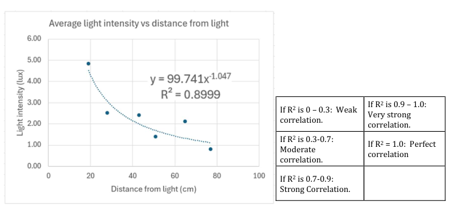
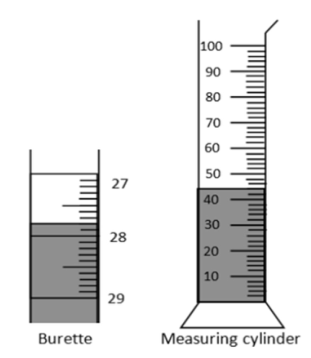
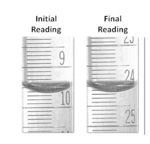
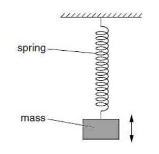

Section A: Multiple choice (12 marks)
A scientific hypothesis can be described by all of the following features except:
Which correctly describes the process of the scientific method?
Diogo and Andre are investigating how the volume of water is related to its temperature. Which is the correct combination of controlled (CV), dependent (DV) and independent (IV) variables?
Use this information for Questions 4 and 5. Flo, Jeremie and Milos share a house and love plants. Their living room has several tomato plants near the windows and in the middle of the room. They returned from a 3-week holiday and looked at their tomato plants.
- Flo said, "The tomato plants near the window grew taller than those in the middle of the room."
- Jeremie replied, "Tomato plants grow taller when they receive more sunlight."
- Milos remarked, "The increased height of the window-side plants suggests that sunlight positively affects plant growth."
Whose statement is best described as an inference?
Whose statement is best described as a hypothesis?
When recording the uncertainty of a piece of apparatus, the uncertainty includes all of the following except:
In a scientific investigation, a fair test is an experiment in which:
Use this information for Questions 8 and 9. A group of Year 9 students obtained this graph from their experiment.

After analysing the graph, the students wrote these statements. Which one is correct?
There is an outlier; R² = 0.8999 is a strong (not very strong) correlation; and the trend is a curve, not linear.
Using the graph, the students estimated the light intensity at 1.0 m from the light as about 0.9 lux. What is this kind of estimate called, and how reliable is it?
1.0 m = 100 cm, which is beyond the data (up to 80 cm).
The evaluation stage of an investigation involves all of the following except:
All these errors are possible when measuring the independent and dependent variables. Which one need not be discussed in the report?
"Human error" (mistakes) should be fixed by repeating the measurement, not discussed as a source of error.
Communicating a scientific investigation clearly involves all of the following except:
Section B: Short answer (24 marks)
Question 1 (11 marks)
Wata and Dom read a biology textbook to find an investigation. Catalase is an essential enzyme that protects cells by breaking down hydrogen peroxide, a toxin produced in normal cell processes, into water and oxygen gas. Catalase is found in potatoes and animal livers.
They blended a large potato to extract juice containing catalase. When the juice is mixed with hydrogen peroxide, the mixture bubbles vigorously, producing oxygen that can be collected and measured. In a controlled experiment with undiluted potato juice, oxygen is produced at 185 cm3 per minute at room temperature (22 °C).
Write one research question about the concentration of catalase and the rate of oxygen production. (This is not a hypothesis.)
"What is the effect of the concentration of catalase (IV, 1 mark) on the rate of oxygen production (DV, 1 mark)?"
Wata and Dom changed the concentration of catalase by diluting the juice with water. The dilution is the number of parts of water mixed with one part of potato juice, so the higher the dilution, the less concentrated the catalase.
Write a hypothesis relating the dilution of the catalase to the rate of oxygen production.
The higher the dilution of the catalase (1 mark), the lower the rate of oxygen production (1 mark).
Identify the variables and their data types.
Independent variable: ; data type:
Dependent variable: ; data type:
List three controlled variables in this experiment.
Any three, for example: juice from the same potato; the concentration (and volume) of the hydrogen peroxide; the temperature; the same set-up and procedure, e.g. the method of collecting the oxygen.
What type of graph would you use to plot the results?
Question 2 (3 marks)
The diagram shows the scale on a burette. Compared with a measuring cylinder, the burette's scale is upside down.

Suggest why the burette's scale is reversed.
It measures how much liquid has been drained (delivered) from the burette: the reading increases as liquid runs out.

What is the initial reading, to 2 decimal places?
About 9.63 mL (±0.05). Read at the bottom of the meniscus.
How much liquid has been drained from the burette, to 2 decimal places? (The final reading is 24.15 mL.)
24.15 − 9.63 = 14.52 mL (±0.1).
Question 3 (10 marks)
Cody and Mo are experimenting with a mass oscillating on a spring.

The mass is pulled down slightly and released, so it oscillates up and down. The period T is the time for the mass to go from its highest position down to its lowest and back up to its highest position. Background research suggests that T = C√m, where C is a constant related to the spring. They investigate the relationship between the mass m and the period T:
| Mass m (g) | Trial 1 T (s) | Trial 2 T (s) | Trial 3 T (s) | Average T (s) |
|---|---|---|---|---|
| 15 | 2.65 | 2.77 | 2.81 | 2.74 |
| 30 | 3.95 | 3.73 | 3.75 | 3.81 |
| 45 | 4.86 | 4.79 | 4.74 | 4.80 |
| 60 | 5.38 | 5.39 | 5.61 | 5.46 |
| 75 | 6.02 | 6.09 | 6.14 | 6.08 |
On graph paper: plot the data; include a suitable title; include a suitable title and units on each axis; and draw a smooth curve of best fit through the data. Describe your graph, then compare.
- Points plotted correctly (3 marks; lose 1 for each error).
- A title, e.g. "Average period vs mass" (1 mark).
- Axes: mass (g) on the horizontal axis and average period (s) on the vertical axis (1 mark).
- A smooth curve rising steeply at first and then flattening off (1 mark).
Using your line of best fit, estimate the period for a mass of 50 g.
About 5.2 s (±0.1 s).
Discuss the results, covering: the relationship between the IV and DV; how closely the line of best fit follows the data and what this says about the strength of the correlation; and a well-reasoned explanation for the relationship.
- The period of oscillation is related to the square root of the mass: as the mass increases, the period increases, but more and more slowly (1 mark).
- The correlation is very strong, as the line of best fit passes through (or very close to) all the points (1 mark).
- The larger the mass, the harder it is to move up and down (more inertia), so it takes longer to travel, making its period longer (1 mark).